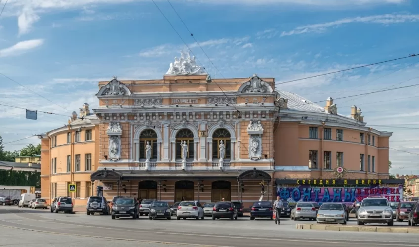
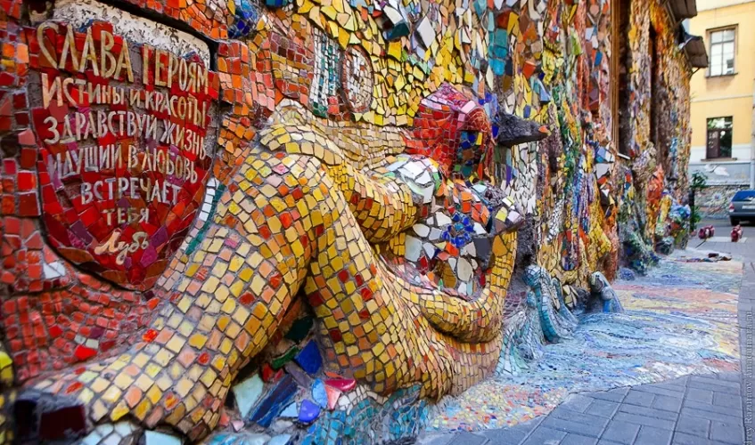
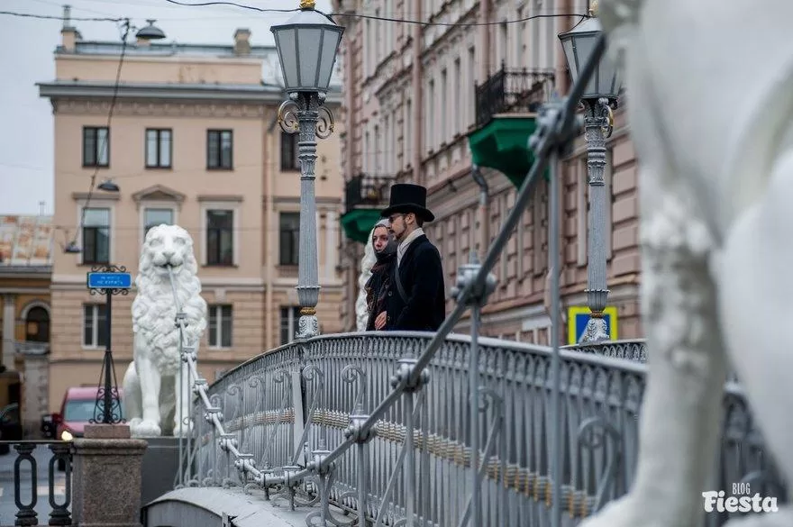
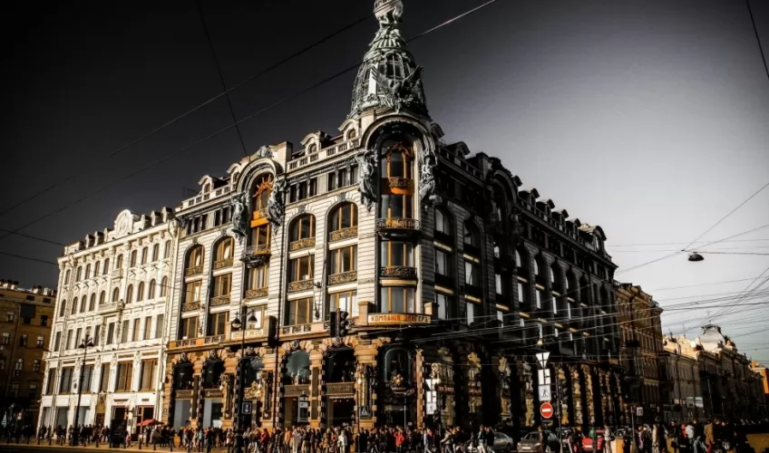
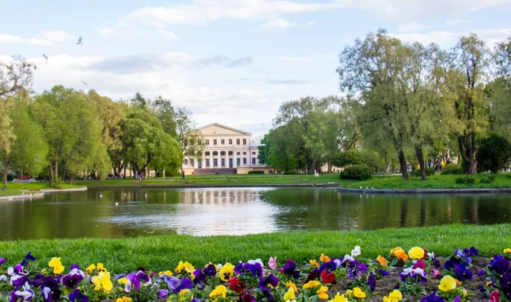
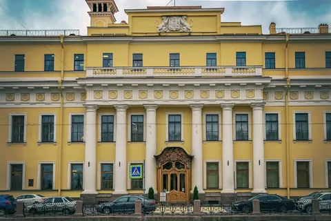
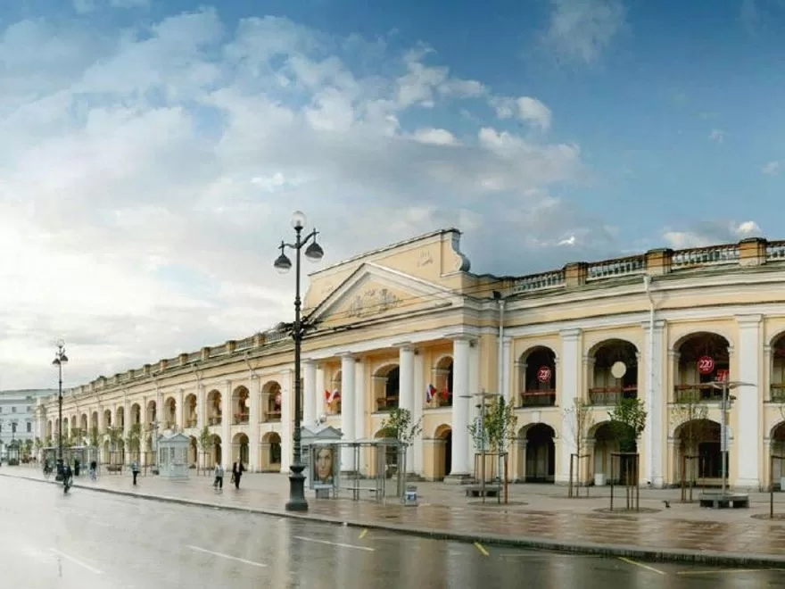
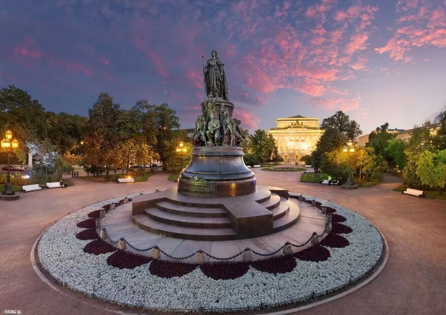
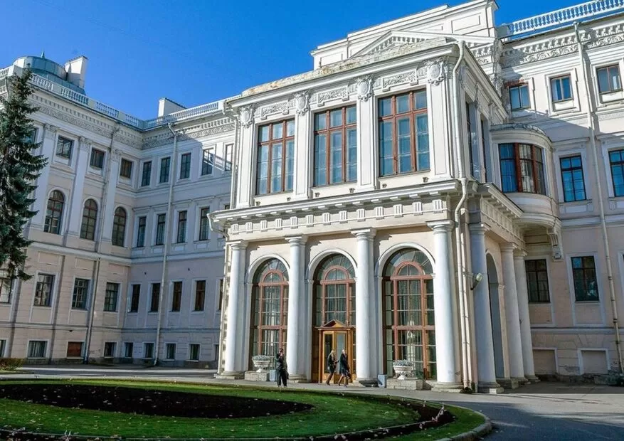
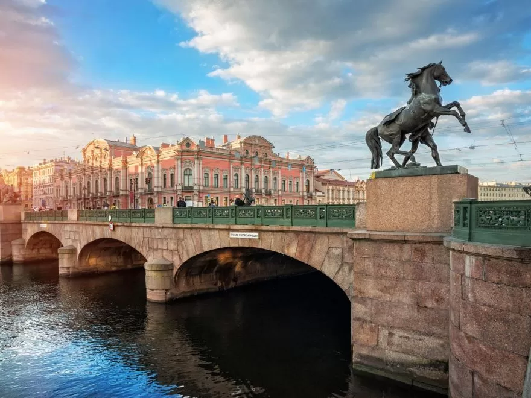

Места, которые стоит посетить
-

- Цирк на Фонтанке
- Мозаичный дворик
- Летний сад
- Львиный мост
- Дом Книги
- Юсуповский сад
- Юсуповский дворец
- Гостиный Двор
- «Екатерининский сад»
- Аничков дворец
- Аничков мост
Большой Санкт-Петербургский государственный цирк был открыт для посетителей 26 декабря 1877 года. Здание цирка, спроектированное архитектором В. А. Кенелем, считается одним из самых красивых в Европе. — набережная Фонтанки, 3
Одна из самых молодых достопримечательностей Петербурге расположилась на улице Чайковского. Скамейки, дорожки, стены — буквально все украшено невероятными яркими красками мозаики. Примечательно, что красочный двор был создан руками юных учеников Малой Академии искусств. — улица Чайковского, 2/7

Один из прекрасных и в тоже время главных садов Петербурга за свою богатую историю был неоднократно перестроен, так что до нас дошло лишь немногое из того, что было задумано и построено в XVIII веке. — набережная Кутузова
Один из самых роскошных мостов Петербурга переброшен через канал Грибоедова. Переправа украшена белоснежными благородными львами. Однако фигуры повелителей зверей не только служат декоративным целям, но и скрывают в себе чугунные опоры, удерживая на цепях всю конструкцию моста. — набережная канала Грибоедова, 98
Здание, созданное для офиса компании-производителя швейных машинок «Зингер», после революции было преобразовано в один из самых известных книжных магазинов Петербурга. На верхних этажах расположился один из офисов социальной сети «Вконтакте». — Невский проспект, 28
Свою историю парк начал еще в 1730-м году, когда князья Юсуповы построили свою усадьбу. В 1860-е по приказу Александра II сад был открыт для всеобщего посещения, но на зиму все же закрывался. В дальнейшем парк начал принимать посетителей круглый год, зимой там стали заниматься фигурным катанием, а в начале XX века проводились всероссийские и международные соревнования. — Садовая улица, 54
Бывший дворец в Санкт-Петербурге, памятник истории и культуры федерального значения. Располагается на набережной реки Мойки, территория дворца с садом простирается до улицы Декабристов. Дворец вошёл в историю как место убийства Григория Распутина. — улица Декабристов, 21
В давние времена это здание было центральным местом торговли в городе. Здесь можно было купить абсолютно все. Сегодня Гостиный двор утратил былой масштаб, и является обычным торговым центром, хотя это нисколько не уменьшает его исторической ценности. — Невский проспект, 35
Уютный сад был спроектирован в далекие 1816-1834 годы архитектором К. Росси. Теперь это одно из самых излюбленных мест отдыха, как петербуржцев, так и гостей города. Ежегодно в саду проводятся ярмарки и народные гуляния. — Площадь Островского
Дворец был построен в качестве подарка фавориту Елизаветы Петровны Алексею Разумовскому. Из-за своего местонахождения Аничков дворец служил украшением въезда в Петербург, граница которого в середине XVIII века проходила по Фонтанке. После революции в 1937 году в нем открыли Дворец пионеров, который существует и сегодня. — Невский проспект, д. 39
Один из самых знаменитых мостов Петербурга. Свое название мост получил в честь полковника-инженера Михаила Аничкова, чей батальон был расположен за Фонтанкой в Аничковой слободе ещё во времена Петра Великого. — ул. Есенина, д. 1